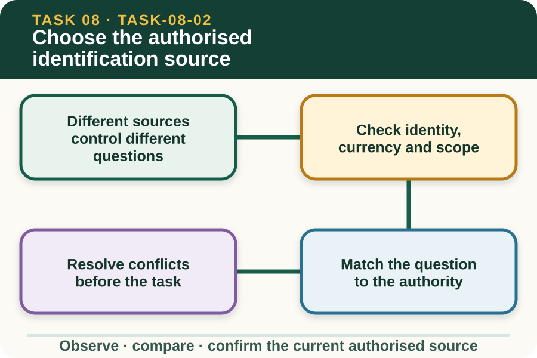

Classroom presentation · 8 slides
Choose the authorised identification source
Task 8 · 1 of 8
Choose the authorised identification source
Distinguish enterprise instructions, regulatory sources, device information and record requirements.

Speaker notes
Teaching move (web-deck purpose): Use the module visual and the fictional worked example to move students from observation to a source-led decision. Ask students to name the evidence, the authority gap and the next safe communication step. Misconception and help: Choose the current source tied to the actual enterprise roles and systems. Match the authority domain to the question being asked. Applied action: Build a source authority card set. Classify fictional source cards as regulatory, enterprise, device, training or assessment. Add issuer, currency, scope and one question each can answer. Mark ambiguous cards for Teacher/RTO confirmation. Boundary: This supplementary learning draws on mapped AHCLSK225 concepts. Current signed TAS and RTO documents control cohort delivery, assessment and competency decisions; current workplace procedures, supervision and authorised sources control real work. [Sources] - Source basis: AHCLSK225 Release 1 requirements to work under supervisor instructions, workplace procedures and applicable legislation, with the senior VET authority hierarchy. Current regulatory, enterprise, device, training and RTO sources control only their respective domains. - Visual visual-task-08-02: Generated locally from accepted Stage 05 module headings; no external image copied. - Course visual manifest: work/pi/visuals/visual-manifest.json
Task 8 · 2 of 8
Map the learning
- Different sources control different questions
- Check identity, currency and scope
- Match the question to the authority
Retrieve: Which source most directly controls local identification roles and record workflow?
Speaker notes
Teaching move (learning map): Use the module visual and the fictional worked example to move students from observation to a source-led decision. Ask students to name the evidence, the authority gap and the next safe communication step. Misconception and help: Choose the current source tied to the actual enterprise roles and systems. Match the authority domain to the question being asked. Applied action: Build a source authority card set. Classify fictional source cards as regulatory, enterprise, device, training or assessment. Add issuer, currency, scope and one question each can answer. Mark ambiguous cards for Teacher/RTO confirmation. Boundary: This supplementary learning draws on mapped AHCLSK225 concepts. Current signed TAS and RTO documents control cohort delivery, assessment and competency decisions; current workplace procedures, supervision and authorised sources control real work. [Sources] - Source basis: AHCLSK225 Release 1 requirements to work under supervisor instructions, workplace procedures and applicable legislation, with the senior VET authority hierarchy. Current regulatory, enterprise, device, training and RTO sources control only their respective domains. - Visual visual-task-08-02: Generated locally from accepted Stage 05 module headings; no external image copied. - Course visual manifest: work/pi/visuals/visual-manifest.json
Task 8 · 3 of 8
Notice the evidence
Different sources control different questions
Regulatory sources may define legal identification and movement obligations, while enterprise procedures define local records and roles. Approved device information controls product identity and use within its real scope.
The RTO package controls assessment, and teacher demonstrations control supervised learning activity. No single general web page automatically answers every legal, enterprise, device and assessment question.
Check identity, currency and scope
Before relying on a source, record its title, issuing authority, version or date, intended species or task, access status and location. This helps distinguish a current controlling document from background explanation.
A familiar document may be superseded or intended for a different jurisdiction, species, enterprise or purpose. If currency is unclear, mark it for authorised confirmation rather than applying it.
Speaker notes
Teaching move (theory idea 1): Use the module visual and the fictional worked example to move students from observation to a source-led decision. Ask students to name the evidence, the authority gap and the next safe communication step. Misconception and help: Choose the current source tied to the actual enterprise roles and systems. Match the authority domain to the question being asked. Applied action: Build a source authority card set. Classify fictional source cards as regulatory, enterprise, device, training or assessment. Add issuer, currency, scope and one question each can answer. Mark ambiguous cards for Teacher/RTO confirmation. Boundary: This supplementary learning draws on mapped AHCLSK225 concepts. Current signed TAS and RTO documents control cohort delivery, assessment and competency decisions; current workplace procedures, supervision and authorised sources control real work. [Sources] - Source basis: AHCLSK225 Release 1 requirements to work under supervisor instructions, workplace procedures and applicable legislation, with the senior VET authority hierarchy. Current regulatory, enterprise, device, training and RTO sources control only their respective domains. - Visual visual-task-08-02: Generated locally from accepted Stage 05 module headings; no external image copied. - Course visual manifest: work/pi/visuals/visual-manifest.json
Task 8 · 4 of 8
Use the source boundary
Match the question to the authority
A source-selection question should be narrow: Which identifier applies, which register receives the event, who approves materials, or which record field is required? Each question may have a different controlling source.
Using a regulator page to invent local staffing or using an enterprise sheet to infer legal requirements confuses authority domains. Record the boundary beside the source.
Resolve conflicts before the task
When two sources conflict, compare their authority, currency, scope and relationship to the current task. Do not blend them into a new instruction or choose whichever is more convenient.
The current authorised supervisor or responsible record custodian confirms which source controls. The conflict, confirmation source and final resolution should remain traceable for future workplace planning and review.
Speaker notes
Teaching move (theory idea 2): Use the module visual and the fictional worked example to move students from observation to a source-led decision. Ask students to name the evidence, the authority gap and the next safe communication step. Misconception and help: Choose the current source tied to the actual enterprise roles and systems. Match the authority domain to the question being asked. Applied action: Build a source authority card set. Classify fictional source cards as regulatory, enterprise, device, training or assessment. Add issuer, currency, scope and one question each can answer. Mark ambiguous cards for Teacher/RTO confirmation. Boundary: This supplementary learning draws on mapped AHCLSK225 concepts. Current signed TAS and RTO documents control cohort delivery, assessment and competency decisions; current workplace procedures, supervision and authorised sources control real work. [Sources] - Source basis: AHCLSK225 Release 1 requirements to work under supervisor instructions, workplace procedures and applicable legislation, with the senior VET authority hierarchy. Current regulatory, enterprise, device, training and RTO sources control only their respective domains. - Visual visual-task-08-02: Generated locally from accepted Stage 05 module headings; no external image copied. - Course visual manifest: work/pi/visuals/visual-manifest.json
Task 8 · 5 of 8
Connect evidence to action
Controlled sources stay controlled
Some enterprise, student or assessor documents are accessible only through authenticated systems. Their location, identity and role can be mapped without copying protected content into a public course website.
Students should follow the approved link and sign-in process. A public summary may orient them to the source, but must not reproduce device instructions, controlled assessment responses or confidential enterprise details.
Record uncertainty honestly
When the current source is missing, the correct staff record is Teacher/RTO to confirm. Student prose can simply state that the teacher will provide the current approved source before supervised work.
Completing a source-matching activity shows practice in document literacy only. It does not authorise device selection, livestock handling, legal compliance, enterprise record access or formal RTO assessment.
Speaker notes
Teaching move (theory idea 3): Use the module visual and the fictional worked example to move students from observation to a source-led decision. Ask students to name the evidence, the authority gap and the next safe communication step. Misconception and help: Choose the current source tied to the actual enterprise roles and systems. Match the authority domain to the question being asked. Applied action: Build a source authority card set. Classify fictional source cards as regulatory, enterprise, device, training or assessment. Add issuer, currency, scope and one question each can answer. Mark ambiguous cards for Teacher/RTO confirmation. Boundary: This supplementary learning draws on mapped AHCLSK225 concepts. Current signed TAS and RTO documents control cohort delivery, assessment and competency decisions; current workplace procedures, supervision and authorised sources control real work. [Sources] - Source basis: AHCLSK225 Release 1 requirements to work under supervisor instructions, workplace procedures and applicable legislation, with the senior VET authority hierarchy. Current regulatory, enterprise, device, training and RTO sources control only their respective domains. - Visual visual-task-08-02: Generated locally from accepted Stage 05 module headings; no external image copied. - Course visual manifest: work/pi/visuals/visual-manifest.json
Task 8 · 6 of 8
Retrieve and check
Which source most directly controls local identification roles and record workflow?
- The current authorised enterprise procedure and supervisor direction.
- An undated worksheet from an unknown property.
- A fictional diagram made for this lesson.
Teacher reveal
Correct. These sources define local people, systems and workflow for the actual workplace.
Match the authority domain to the question being asked.
Speaker notes
Teaching move (retrieval): Use the module visual and the fictional worked example to move students from observation to a source-led decision. Ask students to name the evidence, the authority gap and the next safe communication step. Misconception and help: Choose the current source tied to the actual enterprise roles and systems. Match the authority domain to the question being asked. Applied action: Build a source authority card set. Classify fictional source cards as regulatory, enterprise, device, training or assessment. Add issuer, currency, scope and one question each can answer. Mark ambiguous cards for Teacher/RTO confirmation. Boundary: This supplementary learning draws on mapped AHCLSK225 concepts. Current signed TAS and RTO documents control cohort delivery, assessment and competency decisions; current workplace procedures, supervision and authorised sources control real work. [Sources] - Source basis: AHCLSK225 Release 1 requirements to work under supervisor instructions, workplace procedures and applicable legislation, with the senior VET authority hierarchy. Current regulatory, enterprise, device, training and RTO sources control only their respective domains. - Visual visual-task-08-02: Generated locally from accepted Stage 05 module headings; no external image copied. - Course visual manifest: work/pi/visuals/visual-manifest.json Use option-specific feedback after the learner commits to an answer.
Task 8 · 7 of 8
Construct a source-led response
Compare two fictional identification sources and justify which authority domain should answer a local record question, a legal-system question and a device-information question.
- Source A was issued by… and controls…
- Source B was issued by… and controls…
- Their currency and scope are…
- The local record question belongs to…
- The legal-system question belongs to…
- The unresolved conflict should be confirmed by…
Success criteria
- Identifies issuer, currency and scope
- Matches questions to appropriate authority domains
- Records conflicts without merging sources
- Does not reproduce device technique or assessor content
Speaker notes
Teaching move (guided written response): Use the module visual and the fictional worked example to move students from observation to a source-led decision. Ask students to name the evidence, the authority gap and the next safe communication step. Misconception and help: Choose the current source tied to the actual enterprise roles and systems. Match the authority domain to the question being asked. Applied action: Build a source authority card set. Classify fictional source cards as regulatory, enterprise, device, training or assessment. Add issuer, currency, scope and one question each can answer. Mark ambiguous cards for Teacher/RTO confirmation. Boundary: This supplementary learning draws on mapped AHCLSK225 concepts. Current signed TAS and RTO documents control cohort delivery, assessment and competency decisions; current workplace procedures, supervision and authorised sources control real work. [Sources] - Source basis: AHCLSK225 Release 1 requirements to work under supervisor instructions, workplace procedures and applicable legislation, with the senior VET authority hierarchy. Current regulatory, enterprise, device, training and RTO sources control only their respective domains. - Visual visual-task-08-02: Generated locally from accepted Stage 05 module headings; no external image copied. - Course visual manifest: work/pi/visuals/visual-manifest.json
Task 8 · 8 of 8
Close the loop
Build a source authority card set
Classify fictional source cards as regulatory, enterprise, device, training or assessment. Add issuer, currency, scope and one question each can answer. Mark ambiguous cards for Teacher/RTO confirmation.
- Name the strongest evidence in the scenario.
- Explain the decision or referral it supports.
- State which current source or authorised person controls real work.
Boundary: This supplementary learning draws on mapped AHCLSK225 concepts. Current signed TAS and RTO documents control cohort delivery, assessment and competency decisions; current workplace procedures, supervision and authorised sources control real work.
Speaker notes
Teaching move (exit and application): Use the module visual and the fictional worked example to move students from observation to a source-led decision. Ask students to name the evidence, the authority gap and the next safe communication step. Misconception and help: Choose the current source tied to the actual enterprise roles and systems. Match the authority domain to the question being asked. Applied action: Build a source authority card set. Classify fictional source cards as regulatory, enterprise, device, training or assessment. Add issuer, currency, scope and one question each can answer. Mark ambiguous cards for Teacher/RTO confirmation. Boundary: This supplementary learning draws on mapped AHCLSK225 concepts. Current signed TAS and RTO documents control cohort delivery, assessment and competency decisions; current workplace procedures, supervision and authorised sources control real work. [Sources] - Source basis: AHCLSK225 Release 1 requirements to work under supervisor instructions, workplace procedures and applicable legislation, with the senior VET authority hierarchy. Current regulatory, enterprise, device, training and RTO sources control only their respective domains. - Visual visual-task-08-02: Generated locally from accepted Stage 05 module headings; no external image copied. - Course visual manifest: work/pi/visuals/visual-manifest.json